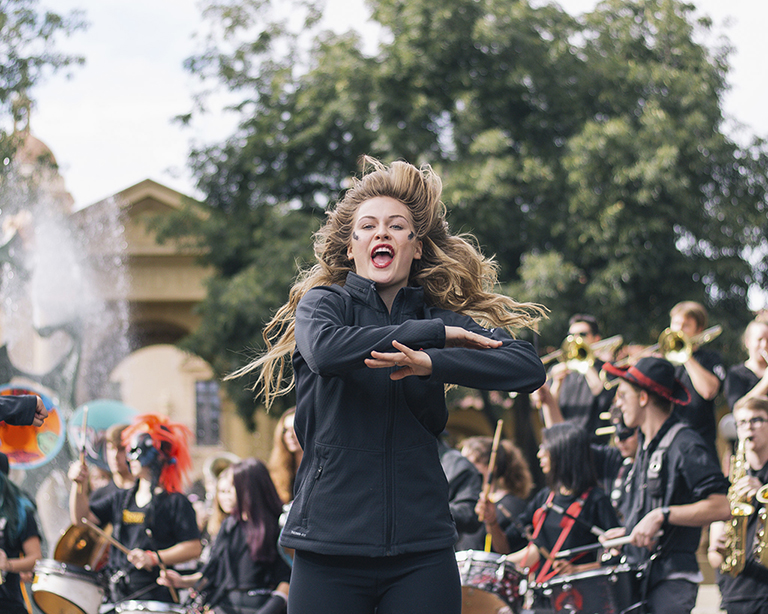

The Undergrad Photo Contest is a way for you to show us -- and the rest of the student body -- your Stanford life. We will be awarding prizes for each of 5 categories:

The Arts
What counts as art? Show us! Send in photos of your friends and peers engaged in creative pursuits. This includes everything from spontaneous late night jam sessions to the capstone creative project you've been working on all year. Examples: painting, performing, recording, sculpting, creative writing, sound art, photography...
Photo by Monique Ouk, Autumn 2017.

Learning In Action
What counts as art? Show us! Send in photos of your friends and peers engaged in creative pursuits. This includes everything from spontaneous late night jam sessions to the capstone creative project you've been working on all year. Examples: painting, performing, recording, sculpting, creative writing, sound art, photography...
Photo by Monique Ouk, Autumn 2017.
What does learning look like at Stanford? Send in photos of your academic pursuits both inside and outside of the classroom. Examples: Study sessions, lectures, meetings with advisors, classes, workshops, presentations, tutoring at the Hume Center, PWR, Thinking Matters, IntroSems, ESF, ITALIC, SIMILE...

The Arts
What counts as art? Show us! Send in photos of your friends and peers engaged in creative pursuits. This includes everything from spontaneous late night jam sessions to the capstone creative project you've been working on all year. Examples: painting, performing, recording, sculpting, creative writing, sound art, photography...

Learning in Action
What does learning look like at Stanford? Send in photos of your academic pursuits both inside and outside of the classroom. Examples: Study sessions, lectures, meetings with advisors, classes, workshops, presentations, tutoring at the Hume Center, PWR, Thinking Matters, IntroSems, ESF, ITALIC, SIMILE...

A Day in the Life
What does your typical day look like? Take us behind the scenes. Examples: hanging out with friends, going to a game, happenings in White Plaza, student group meetings, campus traditions...

Off Campus
Get outside of the Stanford bubble! Submit photos of field trips, internships, Alternative Spring Break adventures, Stanford in Washington, study abroad, local excursions...

Technical Skill: Loving Light
"Embrace light. Admire it. Love it. But above all, know light. Know it for all you are worth, and you will know the key to photography.” – George Eastman, founder of Kodak
Take photos with light in mind -- the rest is up to you.
The Fine Print: Rules and Requirements
- Only Stanford undergraduates enrolled during the current quarter are eligible to win.
- Please do not submit photos previously submitted to the Undergrad Photo Contest or owned by another organization.
- Students may submit up to 10 photos per category. Use your artistic judgement and send us only your very best work!
- Students submitting photographs agree to a photo release while entering photos into the contest. If there are any questions or concerns about permissions and image rights, please contact undergradhelp@lists.stanford.edu.
More to Explore
Arts Intensive